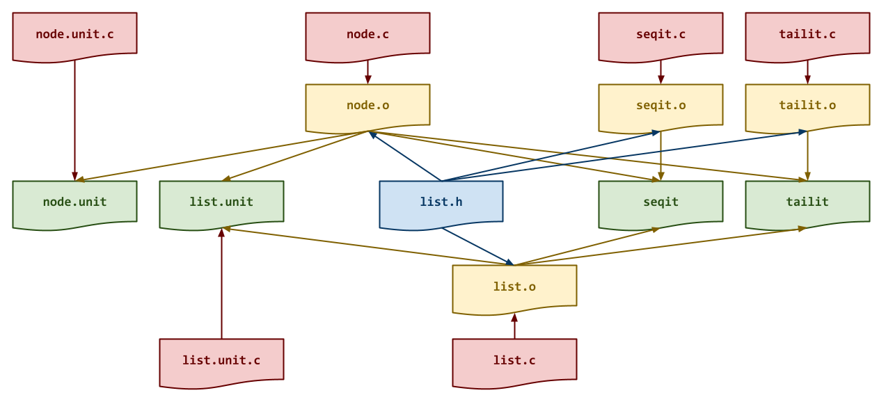
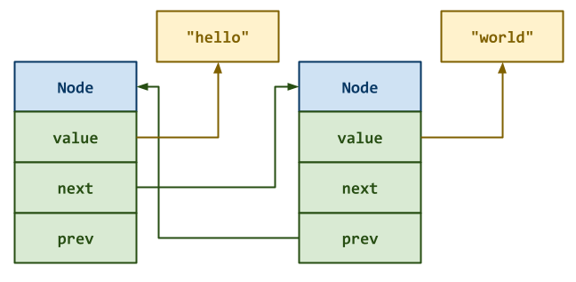
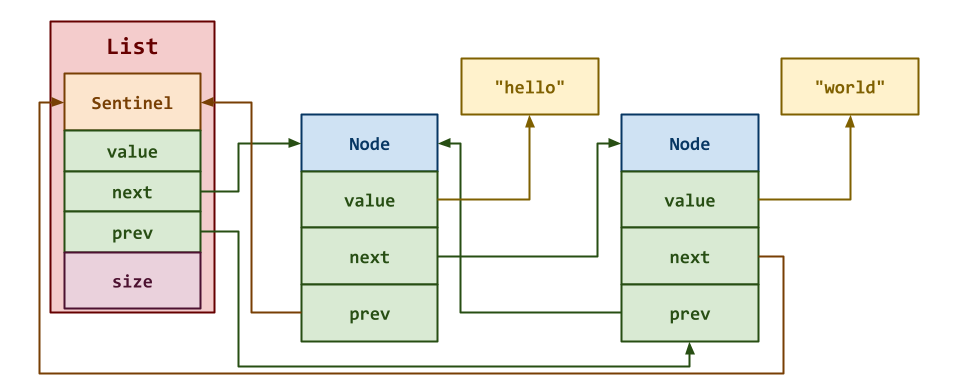
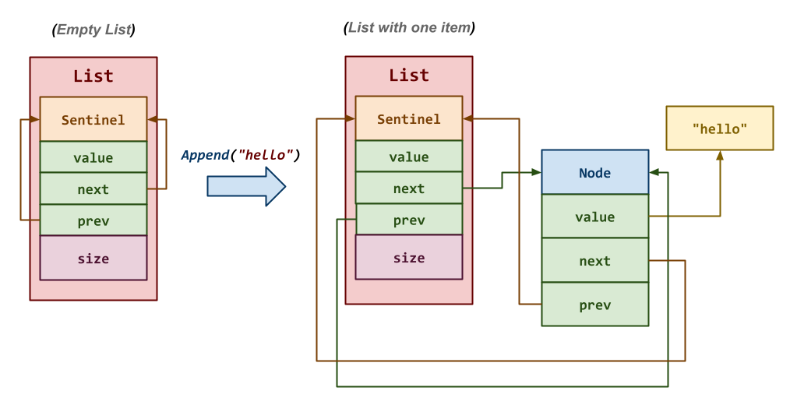

The goal of this homework assignment is to allow you to practice memory management in C by building a linked list. The first activities involve implementing a doubly linked list with a sentinel node, while the last two activities requires you to use this data structure to implement your own versions of seq and tail.
For this assignment, you are to do your work in the homework07 folder of
your assignments GitHub repository and push your work by noon
Saturday, March 28.
Frequently Asked Questions¶
Activity 0: Preparation¶
Before starting this homework assignment, you should first perform a git
pull to retrieve any changes in your remote GitHub repository:
$ cd path/to/repository # Go to assignments repository
$ git switch master # Make sure we are in master branch
$ git pull --rebase # Get any remote changes not present locally
Next, create a new branch for this assignment:
$ git switch -c homework07 # Create homework07 branch and check it out
Task 1: Skeleton Code¶
To help you get started, the instructor has provided you with the following skeleton code:
# Go to homework07 folder
$ cd homework07
# Download Makefile
$ curl -LO https://pnutz.h4x0r.space/courses/cse.20289.sp26/static/txt/homework07/Makefile
# Download C skeleton code
$ curl -LO https://pnutz.h4x0r.space/courses/cse.20289.sp26/static/txt/homework07/list.c
$ curl -LO https://pnutz.h4x0r.space/courses/cse.20289.sp26/static/txt/homework07/list.h
$ curl -LO https://pnutz.h4x0r.space/courses/cse.20289.sp26/static/txt/homework07/list.unit.c
$ curl -LO https://pnutz.h4x0r.space/courses/cse.20289.sp26/static/txt/homework07/node.c
$ curl -LO https://pnutz.h4x0r.space/courses/cse.20289.sp26/static/txt/homework07/node.unit.c
$ curl -LO https://pnutz.h4x0r.space/courses/cse.20289.sp26/static/txt/homework07/seqit.c
$ curl -LO https://pnutz.h4x0r.space/courses/cse.20289.sp26/static/txt/homework07/tailit.c
Once downloaded and extracted, you should see the following files in your
homework07 directory:
homework07
\_ Makefile # This is the Makefile for building all the assignment artifacts
\_ list.c # This is the List structure C source file
\_ list.h # This is the List library C header file
\_ list.unit.c # This is the List structure C unit test source file
\_ node.c # This is the Node structure C source file
\_ node.unit.c # This is the Node structure C unit test source file
\_ seqit.c # This is the seqit utility C source file
\_ list.c # This is the tailit utility C source file
Task 2: Initial Import¶
Now that the files are downloaded into the homework07 folder, you can
commit them to your git repository:
$ git add Makefile # Mark changes for commit
$ git add *.c *.h # Mark changes for commit
$ git commit -m "Homework 07: Initial Import" # Record changes
Task 3: Unit Tests¶
After downloading these files, you can run make test to run the tests.
# Run all tests (will trigger automatic download)
$ make test
You will notice that the Makefile downloads these additional test files and scripts:
homework07
\_ list.unit.sh # This is the List structure unit test shell script
\_ node.unit.sh # This is the Node structure unit test shell script
\_ seqit.test.sh # This is the seqit utility test shell script
\_ tailit.test.sh # This is the tailit utility test shell script
You will be using these unit tests to verify the correctness and behavior of your code.
Automatic Download¶
The test scripts are automatically downloaded by the Makefile, so any
modifications you do to them will be lost when you run make again. Likewise,
because they are automatically downloaded, you do not need to add or commit
them to your git repository.
The details on what you need to implement for this assignment are described in the following sections.
Task 4: Makefile¶
The Makefile contains all the rules or recipes for building the project
artifacts (e.g. node.unit, list.unit, seqit, tailit, etc.):
CC= gcc
CFLAGS= -Wall -g -std=gnu99
LD= gcc
LDFLAGS= -L.
TARGETS= seqit tailit
all: $(TARGETS)
#-------------------------------------------------------------------------------
# TODO: Add rules for node.o, list.o, seqit.o, tailit.o, seqit, tailit
#-------------------------------------------------------------------------------
node.o:
list.o:
seqit.o:
tailit.o:
seqit:
tailit:
#-------------------------------------------------------------------------------
# DO NOT MODIFY BELOW
#-------------------------------------------------------------------------------
...
For this task, you will need to add rules for building the programs seqit
and tailit. Be sure to have a recipe for any intermediate object
files that programs require as shown in the DAG below:

Makefile Variables¶
You must use the CC, CFLAGS, LD, and LDFLAGS variables when
appropriate in your rules. You should also consider using automatic
variables such as $@ and $< as well.
Once you have a working Makefile, you should be able to run the following
commands:
# Build all TARGETS
$ make
gcc -Wall -std=gnu99 -g -c -o seqit.o seqit.c
gcc -Wall -std=gnu99 -g -c -o node.o node.c
gcc -Wall -std=gnu99 -g -c -o list.o list.c
gcc -L. -o seqit seqit.o node.o list.o
gcc -Wall -std=gnu99 -g -c -o tailit.o tailit.c
gcc -L. -o tailit tailit.o node.o list.o
# Run all tests
$ make test
Testing node ...
...
# Remove generated artifacts
$ make clean
Note: The tests will fail if you haven't implemented Node or List
structures, or the seqit or tailit programs.
Compiler Warnings¶
You must include the -Wall flag in your CFLAGS when you compile. This
also means that your code must compile without any warnings, otherwise
points will be deducted.
Task 5: list.h¶
The list.h file is the header file for the doubly linked list library, which
contains the following structs and function prototypes:
/* list.h: Doubly Linked List Library */
#pragma once
#include <stdbool.h>
#include <stdint.h>
#include <stdlib.h>
/* Value Union */
typedef union {
int64_t number; // Value as number
char *string; // Value as string
} Value;
/* Node Structure */
typedef struct Node Node;
struct Node {
Value value; // Value
Node *next; // Pointer to next Node
Node *prev; // Pointer to previous Node
};
Node * node_create(Value v, Node *next, Node *prev);
void node_delete(Node *n, bool release);
/* List Structure */
typedef struct {
Node sentinel; // Sentinel Node at head and tail of List
size_t size; // Number of Nodes in List
} List;
List * list_create();
void list_delete(List *l, bool release);
void list_append(List *l, Value v);
Value list_pop(List *l, size_t index);
Other programs will #include this file in order to use the functions we
will be implementing in this library.
Value Union¶
The Value union is used by the Node structure to store either an
integer or a string:
// Declare a Value union with an integer
Value v = (Value)10L;
// Alternatively
Value v = {.number = 10};
// Access number
printf("%ld\n", v.number);
// Declare a Value union with a string
Value v = (Value)"reasonable";
// Alternatively
Value v = {.string = "reasonable"};
// Access string
puts(v.string);
The details of the Node structure and List structure, and what you need
to implement are provided in the following sections.
Note: For this task, you do not need to modify this file. Instead, you should review it and ensure you understand the provided code.
Activity 1: Node Structure (0.10 Points)¶
For the first activity, you are to implement a Node structure to be
used in a doubly linked list. Each Node structure will have the
following attributes:
-
value: This is a union that can either be a number (ie.int64_t) or a string (ie.char *). -
next: This is a pointer to the nextNodestruct in the sequence. -
prev: This is a pointer to the previousNodestruct in the sequence.

Task 1: node.c¶
The node.c file contains the C implementation for the Node
structure described above. For this task, you will need to implement the
following functions:
-
Node * node_create(Value v, Node *next, Node *prev)This function allocates a new
Nodestruct and initializes its attributes:value,next,prevas described above.void node_delete(Node *n, bool release)This function deallocates the given
Nodestruct along with its internalvalueas a string ifreleaseistrue.Task 2: Testing¶
As you implement the functions in
node.c, you should use thenode.unitexecutable with thenode.unit.shscript to test each of your functions:# Build test artifacts and run test scripts $ make test-node Testing node ... Testing node ... node_create ... Success node_delete ... Success -------------------- Score 2.00 / 2.00 Grade 1.00 / 1.00 Status SuccessYou can also run the testing script manually:
# Run Shell unit test script manually $ ./node.unit.sh ...To debug your
Nodefunctions, you can use gdb on thenode.unitexecutable:# Start gdb on node.unit $ gdb ./node.unit (gdb) run 0 # Run node.unit with the "0" command line argument (ie. node_create) ...You can also use valgrind to check for memory errors:
# Check for memory errors on node_create test case $ valgrind --leak-check=full ./node.unit 0Iterative Development¶
You should practice iterative development. That is, rather than writing a bunch of code and then debugging it all at once, you should concentrate on one function at a time and then test that one thing at a time. The provided unit tests allow you to check on the correctness of the individual functions without implementing everything at once. Take advantage of this and build one thing at a time.
Activity 2: List Structure (0.20 Points)¶
In high-level languages such as Python, we have built-in implementations of lists which support a variety of methods:
# Declare a list >>> data = [5, 7, 4] # Add a new value to the back of list >>> data.append(0) >>> data [5, 7, 4, 0] # Remove value from front of list >>> data.pop(0) 5 >>> data [7, 4, 0] # Remove value from middle of list >>> data.pop(1) 4 >>> data [7, 0]As you already know, lists in Python provide an
appendmethod to add values to the back of the list and apopmethod to remove a value at a specified index from the list.For the second activity, you are to use the
Nodestructure from the previous activity to construct aListstructure that implements a doubly linked list with a sentinel node to mimic the functionality of lists in Python.
The
Liststruct you are to implement has the following attributes:-
sentinel: This is a sentinelNodestruct embedded inside theListstruct. It is used to simplify our internalListmethods by ensuring that there will always be an allocatedNodein the doubly linked list. -
size: This is the number of values in theListstructure.
Note: The sentinel node is not considered part of the actual list. It does not store any
valuenor does it contribute to thesizeof theList.Instead, it is there so that its
nextpointer is the head of the doubly linked list and itsprevpointer is the tail of the doubly linked list.With this
Liststruct in mind, you are to complete the doubly linked list library, which contains functions such aslist_appendandlist_popthat implement some of the functionality present in Python but missing in C.Task 1:
list.c¶The
list.cfile contains the C implementation for theListstructure described above. For this task, you will need to implement the following functions:
For this task, you will need to implement the following functions:
-
List* list_create()This function allocates a new
Liststruct and initializes its attributes:sentinelandsizeas described above.Hint: Use malloc or calloc to allocate data on the heap. Be sure to initialize the
nextandprevpointers ofsentinel.void list_delete(List *l, bool release)This function deallocates the given
Liststruct along with its internalNodestructs.Hint: Use
node_deleteto delete the internalNodestructs.To loop through the internal
Nodestructures, you will want to start with the firstNodethesentinelpoints to and then stop once you return to thesentinel.void list_append(List *l, Value v)This function creates a new
Nodestruct with the givenValuevand adds it to the back of the internal doubly linked list (e.g.l.append(s)in Python).Hint: Use
node_createand take advantage of thesentinelin theListstruct.Value list_pop(List *l, size_t index)This function removes the
Nodestruct at the specifiedindexfrom the internal doubly linked list and returns the associatedValuefrom theNodestruct (e.g.l.pop(index)in Python).Hint: Use
node_deleteand take advantage of thesentinelin theListstruct.If the
indexis beyond the bounds of theList, then return-1Las theValue.Task 2: Testing¶
As you implement the functions in
list.c, you should use thelist.unitexecutable with thelist.unit.shscript to test each of your functions:# Build test artifacts and run test scripts $ make test-list Testing list ... list_create ... Success list_delete ... Success list_append ... Success list_pop ... Success -------------------- Score 4.00 / 4.00 Grade 1.00 / 1.00 Status SuccessYou can also run the testing script manually:
# Run Shell unit test script manually $ ./list.unit.sh ...To debug your
listfunctions, you can use gdb on thelist.unitexecutable:# Start gdb on list.unit $ gdb ./list.unit (gdb) run 0 # Run list.unit with the "0" command line argument (ie. list_create) ...You can also use valgrind to check for memory errors:
# Check for memory errors on list_create test case $ valgrind --leak-check=full ./list.unit 0Activity 3: Seqit (0.20 Points)¶
Once you have implemented both doubly linked list library, you are to complete the
seqit.cprogram, which is a simplified version of the seq utility:# Show usage $ ./seqit Usage: seqit LAST seqit FIRST LAST seqit FIRST INCREMENT LAST # Show sequence of numbers start from 1 through 10 $ ./seqit 10 1 2 3 4 5 6 7 8 9 10 # Show sequence of numbers start from 5 through 10 $ ./seqit 5 10 5 6 7 8 9 10 # Show sequence of odd numbers start from 5 through 10 $ ./seqit 5 2 10 5 7 9As can be seen, the
seqitprogram emits a sequence of numbers (one number per line) based on the specifiedFIRST,INCREMENT, andLASTarguments. By default,FIRSTis1andINCREMENTis1.Task 1:
seqit.c¶The
seqit.cfile contains the C implementation of theseqitprogram described above. You will need to implement the following functions:-
List *generate_sequence(ssize_t first, ssize_t increment, ssize_t last)This function generates a sequence of numbers going from
firsttolastusing the specifiedincrementby building aListwith these numbers and returning it.Hint: Take advantage of the
list_createandlist_appendfunctions you wrote above.Think carefully how you should handle negative
incrementparameters.int main(int argc, char *argv[])This function parses command line arguments for
FIRST,INCREMENT, orLAST, generates a sequence of numbers, and then prints out that sequence (one number per line).Hint: Take advantage of the
list_create,list_pop,list_deletefunctions you wrote above.Task 2: Testing¶
As you implement
seqit.c, you can test it by running thetest-seqittarget:# Build artifact and run test $ make test-seqit Testing seqit ... seqit 1 ... Success seqit 10 ... Success seqit 100 ... Success seqit 1 100 ... Success seqit 1 2 100 ... Success seqit 100 -3 1 ... Success seqit 1 2 3 4 ... Success -------------------- Score 7.00 / 7.00 Grade 1.00 / 1.00 Status SuccessActivity 4: Tailit (0.20 Points)¶
Once you have implemented both doubly linked list library, you are to complete the
tailit.cprogram, which is a simplified version of the tail utility:# Show usage $ ./tailit -h Usage: tailit [-n NUMBER] -n NUMBER Output the last NUMBER of lines (default is 10) # Show last 10 lines $ ./seqit 100 | ./tailit 91 92 93 94 95 96 97 98 99 100 # Show last 5 lines $ ./seqit 100 | ./tailit -n 5 96 97 98 99 100As can be seen, the
tailitprogram reads [standard input] line by line and only emits the last10lines by default. If the user specifies another limit via the-nflag, then only that number of lines is shown.Task 1:
tailit.c¶The
tailit.cfile contains the C implementation of thetailitprogram described above. You will need to implement the following functions:-
List *tail_stream(FILE *stream, size_t limit)This function reads the
streamline by line and returns aListcontaining the lastlimitnumber of lines from thestream.Hint: Take advantage of the
list_create,list_append, andlist_popfunctions you wrote above.Think carefully how you should handle storing only the
limitnumber of lines in yourList.Consider using strdup to ensure the strings you read with fgets persist between function calls.
int main(int argc, char *argv[])This function parses the command line arguments, creates a list of the last
NUMBERof lines, and then prints out the items in the list.Hint: Take advantage of the
list_create,list_pop,list_deletefunctions you wrote above.Task 2: Testing¶
As you implement
tailit.c, you can test it by running thetest-tailittarget:# Build artifact and run test $ make test-tailit tailit -h ... Success tailit -p ... Success tailit ... Success tailit -n 1 ... Success tailit -n 5 ... Success tailit -n 10 ... Success tailit -n 25 ... Success tailit -n 100 ... Success -------------------- Score 8.00 / 8.00 Grade 1.00 / 1.00 Status SuccessActivity 5: Quiz (0.30 Points)¶
Once you have completed all the activities above, you are to complete the following reflection quiz:
As with Reading 01, you will need to store your answers in a
homework07/answers.jsonfile. You can use the form above to generate the contents of this file, or you can write the JSON by hand.To check your quiz directly, you can use the
check.pyscript:$ ../.scripts/check.py Checking homework07 quiz ... Q01 2.00 / 2.00 Q02 1.00 / 1.00 Q03 12.00 / 12.00 Q04 4.00 / 4.00 Q05 1.00 / 1.00 Q06 1.00 / 1.00 -------------------- Score 21.00 / 21.00 Grade 1.00 / 1.00 Status SuccessSubmission¶
To submit your assignment, please commit your work to the
homework07folder of yourhomework07branch in your assignments GitHub repository. Yourhomework07folder should only contain the following files:Makefileanswers.jsonlist.clist.hlist.unit.cnode.cnode.unit.cseqit.ctailit.c
Note: You do not need to commit the test scripts because the
Makefileautomatically downloads them.#----------------------------------------------------------------------- # Make sure you have already completed Activity 0: Preparation #----------------------------------------------------------------------- ... $ git add Makefile # Mark changes for commit $ git commit -m "Homework 07: Makefile" # Record changes ... $ git add node.c # Mark changes for commit $ git commit -m "Homework 07: node.c" # Record changes ... $ git add list.c # Mark changes for commit $ git commit -m "Homework 07: list.c" # Record changes ... $ git add seqit.c # Mark changes for commit $ git commit -m "Homework 07: seqit.c" # Record changes ... $ git add tailit.c # Mark changes for commit $ git commit -m "Homework 07: tailit" # Record changes ... $ git add answers.json # Mark changes for commit $ git commit -m "Homework 07: Quiz" # Record changes ... $ git push -u origin homework07 # Push branch to GitHubAcknowledgments¶
If you collaborated with any other students, or received help from TAs or AI tools on this assignment, please record this support in the
README.mdin thehomework07folder and include it with your Pull Request.Graders¶
Once you have committed your work and pushed it to GitHub, remember to create a pull request and assign it to the appropriate teaching assistant from the Reading 07 TA List.
Note: this list changes each week, so be sure to consult the appropriate list for each assignment.